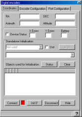
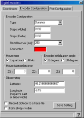
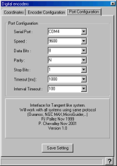

|
This plugin can be used with encoder box using the Tangent protocol like
the Ouranos , AAM or NGC-MAX box.
It use a floating two stars alignment method based on the article by Toshimi
Taki in February 1989 S&T.
Please refer to the manufacturer information to connect the telescope
to the computer and power on the telescope.
Then use the main menu Telescope to
select the encoder plugin and start the interface. If you are asked to
change the program time to auto-refresh reply Yes. The following window
is displayed :

For the first time use you need to provide some configuration
information.
Click the "Connect button", the light must change to green
and the encoder count are displayed at the top of the screen.
Perform the following alignment procedure :
- If you select 90 degree initialization :
- point the telescope vertically for an altaz mount or parallel
to the polar axis for an equatorial mount. It is important to understand
that you must not point to the real zenith or pole but to the direction
of your mount axis. Use of a fixed graduated circle or a stop piece
can be of great help, see also the discussion about the Z3
parameter below.
- Click the "Init 90°" button.
- If you select 0 degree initialization :
- point the telescope horizontally for an altaz mount or perpendicular
to the polar axis for an equatorial mount. The above note also apply
in this case.
- Click the "Init 0°" button.
- Point the telescope to a star, use a reticle eyepiece and enough power
to precisely center the star.
- Click the star on the chart.
- Select "Sync current object" from the "Telescope"
menu or the right mouse button menu.
- Repeat the procedure for a second star. Beware to choice a star with
enough difference along the two axis from the first star.
The position of the telescope is now displayed using equatorial and azimuthal
coordinates.
You can now close the interface window by clicking the "Hide"
button.
Refere to the main menu Telescope help
to learn how to show the telescope position on the chart.
Remember you can refine the local precision by using "Sync current
object" on a nearby star at any time, you are not limited with the
number of initialization stars.
The couple of star used for the part of the sky the telescope is actually
pointed is marked by a '*'.
The Clear button delete all the stars in the initialization list and
return the interface in unitialized mode.
A mouse right click in the list allow to delete only one star from the
list.
If your interface return status information this is indicated just below
the coordinates.
You can also do the initialization without the chart by using a star
list even this is probably less convenient. If you really like that check
the "Use" box and select the star from the list, when this star
is centered in the telescope click the Align button.
Main cause of error
Sometime the position show on the chart is not the one you observe in
the telescope, there is many cause of possible error here is a short list
:
- Configuration error :
- Encoder steps number incorrectly set, principally if you gear
the encoder. Use a full mount rotation with a fixed remote reference
to count the exact number.
- Mount fabrication error not set.
- Missmatch between azimuthal and equatorial mount.
- The precision for a two stars alignment is dependent of a precise
first direction initialization, use the Z3 parameter to correct a systematic
error. There is however no need for a precise polar alignment or mount
leveling.
- Unadapted reference stars, the first two alignment stars must have
enough difference along the two axis and be far enough in the sky.
- Also avoid to select an alignement star in the direction of the polar
axis, Polaris is good for an azimuthal mount but not for an equatorial.
- Missing encoder count in the interface box, this may occure if you
move the mount too rapidly or if the battery are low.
- Misidentification of a reference star.
Interface configuration

Select the encoder type you use, if your model is not listed consult your
documentation to find a compatible model, if you find none select the
generic Tangent model.
Set the encoder count for a full rotation for both axis.
The read interval is the amount of time that elapse between two position
query to the interface box. Use a smaller value for a smoother cursor
movement if your box accept that and if your computer as enough power.
Use a larger value to use less computer ressource or if your interface
box as a limited output rate.
Check the mount type (equatorial or Alt-Az) you use and if you prefere
to do the first initialization vertically or horizontally.
The mount fabrication error angle Z1, Z2, Z3 in degree
are the one defined in Taki article :
Z1 is the amount by which the elevation axis is offset from the perpendicular
to the horizontal axis.
Z2 is the pointing error of the telescope optical axis in the same plane.
Z3 can be considered a correction to the zero setting of the elevation
circle.
Mesuring Z1 and Z2 can be a difficult task, but Z3 can be of great interest
to help to initialize the mount.
As an example imagine your Dobson mount as a security stop 5 degrees above
the horizon to avoid to flip the primary mirror. You can set Z3=5 and
check the initialization at 0 degree. To initialize the mount simply put
the telescope pipe horizontally to the security stop and click the "Init
0°" button, that's all.
You can imagine the same if the stop is 15 degrees after the zenith but
in this case use the "Init 90°" button.
You don't need to set the observatory coordinates as this is automatically
done from the location defined in Cartes du Ciel.
In the case of problem with the interface you can trace the protocol
to a file by checking "Record protocol to a trace file".
The last check box let you choice if you want this window always visible
at the top of the other.
Communication port configuration

Select the serial port (COM1 to COM8) where the telescope is connected.
Set other options (speed, data, parity and stop) according to the manufacturer
informations.
Change the timeout values only if you encounter communication problem
and after identifying the problem with the trace file. Do not set the
timeout to a value greater than the refresh rate in the preceding screen.
Click the Save Setting button to keep your configuration for the next
run.
Also save the default options in Cartes du Ciel menu to keep your interface
choice.
Intelliscope support
Orion Intelliscope support was added by Gary Carpenter
Intelliscope proceedure is :
- Set up Port Configuration
9600,8,N,1
Timeout 1000 mS
Interval Timeout 1000mS
- Set up encoder configuration
Type Intelliscope
Steps for Alpha 9216
Steps for Delta 9216
Read Interval 1000 ( other values may work too )
Mount Type Alt-Az
Encoder Init Angle 90
- Turn on Intelliscope, and press enter atleast once.
( Note 1 : you can go through the alignment proceedure for the Intelliscope or not, the Cdc alignment is independent of the Intelliscope)
Note 2: You must press a key on the Intelliscope once in every 15 mins or it will goto sleep, and you will have to reallign! )
- Press connect and follow the nomal Cdc vertical and two star alignment.
|